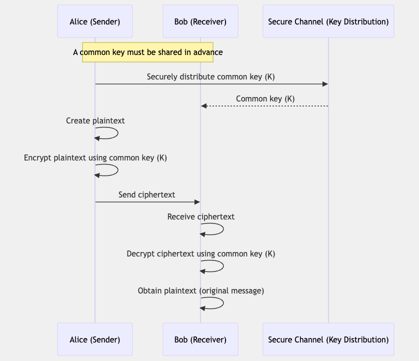
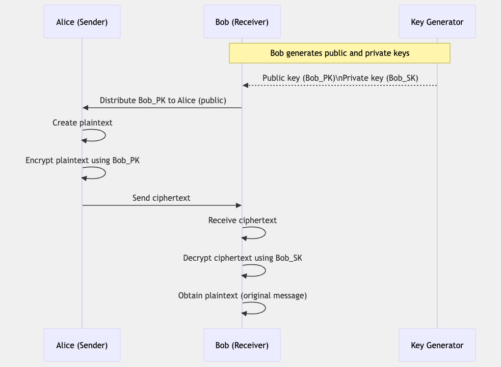
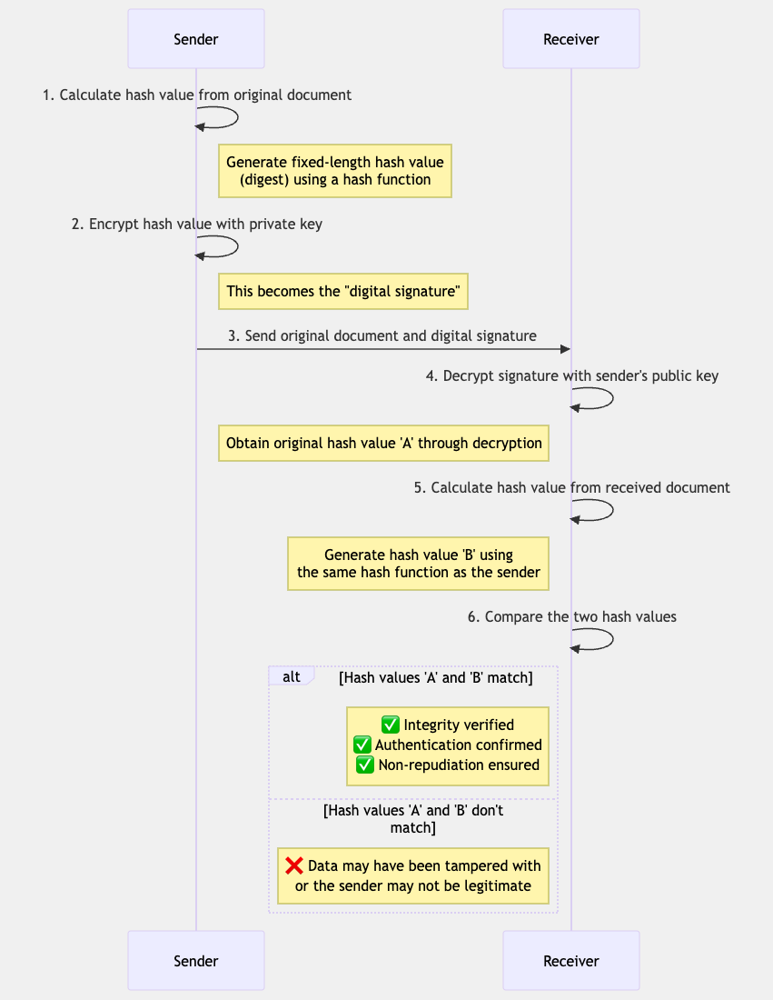
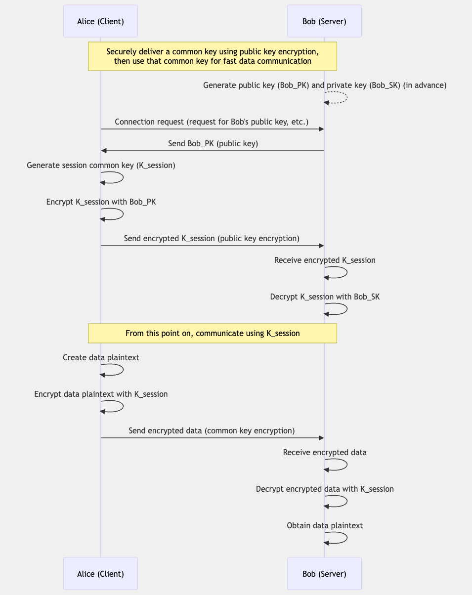

Encryption keys are a crucial element for securely protecting data. This page explains the various types of encryption keys, their uses, and how they work. Encryption technology forms the foundation of modern security systems and is used in many fields, including internet communication, data protection, and authentication.
Encryption is the process of converting information so that it cannot be read by third parties. Encrypted data can only be converted back to the original information by someone who has the appropriate key. Encryption is used to protect confidential information, ensure communication security, and verify data integrity.
The history of encryption dates back to ancient times. Early ciphers were simple methods like substituting or rearranging letters. For example, the Caesar cipher of ancient Rome was a simple method of shifting the alphabet by a certain number of places.
Modern encryption has become more complex with the development of computers, and powerful cryptographic methods based on mathematical algorithms have been developed. The breaking of the Enigma machine's code during World War II greatly contributed to the development of modern cryptography.
An encryption key is a secret value used in conjunction with a cryptographic algorithm. The key controls the encryption and decryption process, and using different keys with the same algorithm produces different results.
The main roles of an encryption key are as follows:
The length of an encryption key is directly related to the strength of the encryption. The longer the key, the more resistant it is to brute-force attacks.
For example, a 128-bit key has 2128 (approximately 3.4×1038) possible combinations, making a brute-force attack impractical with current computer technology. Commonly used key lengths are as follows:
As computer processing power improves, the recommended key lengths gradually increase. It is important to select an appropriate key length according to security requirements.
Encryption key management is one of the most critical elements of an entire security system. Without proper key management, even the strongest encryption algorithm is rendered meaningless.
The main aspects of key management include:
Symmetric-key cryptography (or symmetric encryption) is a cryptographic system that uses the same key for both encryption and decryption. The sender and receiver must share the same key in a secure manner beforehand. This method is faster than public-key cryptography and can efficiently encrypt large amounts of data.
The basic mechanism of symmetric-key cryptography is as follows:

The biggest challenge with symmetric-key cryptography is how to securely share the key. To solve this problem, hybrid systems that combine it with public-key cryptography are often used.
Block ciphers encrypt data in fixed-size blocks. For example, AES uses a block size of 128 bits (16 bytes). If the data is larger than the block size, it is divided into multiple blocks for processing.
Main features of block ciphers:
Stream ciphers encrypt data continuously, one bit or one byte at a time. Encryption is performed by a bitwise XOR operation between the plaintext and a pseudorandom sequence (keystream) generated from the key.
Main features of stream ciphers:
AES is currently the most widely used symmetric-key algorithm. It was standardized by the U.S. National Institute of Standards and Technology (NIST) in 2001. It supports a block size of 128 bits and key lengths of 128, 192, or 256 bits.
AES combines high security and efficiency and is used in many security protocols and applications.
DES is an early symmetric-key algorithm standardized in 1977. It has a block size of 64 bits and an effective key length of 56 bits. Its security is insufficient with modern computing power, and it is not recommended for use in new systems.
3DES is a cryptographic algorithm that enhances security by applying the DES algorithm three times. The effective key length is 112 or 168 bits. It is slower than AES and is gradually being replaced.
ChaCha20 is a fast stream cipher, particularly efficient on mobile devices and in environments without hardware acceleration. It uses a 256-bit key and a 64-bit nonce (initialization vector). It is used in protocols like TLS.
Block cipher modes of operation define how to securely encrypt large amounts of data using a single block cipher. The main modes of operation include:
This is the simplest mode of operation, encrypting each block independently. The same plaintext block results in the same ciphertext block, so patterns are preserved. For security reasons, it is not recommended for general use.
Before encrypting each block, an XOR operation is performed with the ciphertext of the previous block. An initialization vector (IV) is used for the first block. CBC mode is more secure than ECB mode because the same plaintext block results in different ciphertext.
Encryption is performed by encrypting a counter value and then XORing the result with the plaintext. This effectively allows a block cipher to be used as a stream cipher. It allows for parallel processing and is fast.
This is a mode that adds authentication functionality to CTR mode. It generates a Message Authentication Code (MAC) simultaneously with encryption, ensuring both data confidentiality and integrity. It is used in many security protocols such as TLS.
Public-key cryptography (or asymmetric cryptography) is a cryptographic system that uses different keys for encryption and decryption. Each user has a "public key" and a "private key" pair. The public key can be used by anyone, but the private key is known only to the owner. This method allows for encrypted communication without prior secure key sharing.
The basic mechanism of public-key cryptography is as follows:

An important feature of this method is that data encrypted with a public key can only be decrypted with the corresponding private key. Also, data signed with a private key can be verified with the corresponding public key.
RSA is one of the most widely used public-key algorithms. It is based on the difficulty of factoring the product of large prime numbers. RSA can be used for encryption, decryption, and digital signatures.
An RSA key length of 2048 bits or more is generally recommended, with 4096 bits also used depending on security requirements.
Elliptic Curve Cryptography is based on the difficulty of the discrete logarithm problem on elliptic curves. Compared to RSA, it can achieve a similar level of security with a shorter key length. For example, 256-bit ECC provides security equivalent to 3072-bit RSA.
ECC is particularly useful on mobile devices and systems with constraints.
ElGamal is a public-key algorithm based on the discrete logarithm problem. It is mainly used for encryption and can also be applied to digital signatures.
A digital signature is an important application of public-key cryptography. Digital signatures allow for the verification of the message sender's identity (authentication) and the detection of message tampering (integrity).
The basic mechanism of a digital signature is as follows:

Public Key Infrastructure (PKI) is a framework for the practical operation of public-key cryptography. PKI ensures that a public key truly belongs to a specific individual or organization by issuing, managing, and validating digital certificates.
The main components of PKI include:
PKI is used in many applications, such as HTTPS connections in web browsers, encryption and signing of emails (S/MIME), and code signing.
A hybrid cryptosystem is a system that combines the advantages of public-key cryptography and symmetric-key cryptography. Typically, public-key cryptography is used to securely exchange a symmetric key (session key), and that symmetric key is then used to encrypt the actual data.

This approach achieves both the secure key exchange of public-key cryptography and the high-speed processing of symmetric-key cryptography. Many modern encryption protocols, such as TLS/SSL, PGP, and S/MIME, employ a hybrid system.
Encryption keys are used in various situations in modern digital society. The main application examples are as follows: